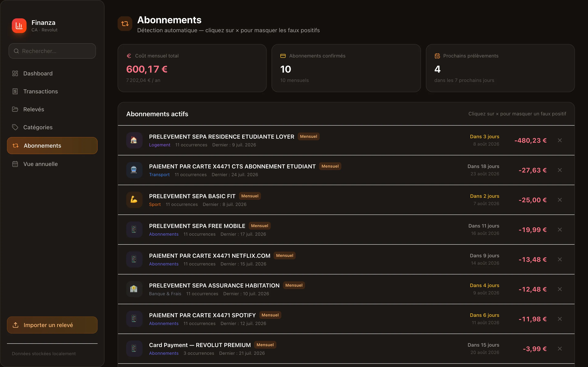

Finanza
Finanza — une application macOS personnelle qui transforme des relevés bancaires CSV (Crédit Agricole et Revolut) en tableaux de bord clairs : dépenses par catégorie, évolution du solde, budgets, abonnements récurrents. Entièrement développée en autonomie, et surtout 100 % locale : aucune donnée financière ne quitte la machine, et l'app ne se déverrouille qu'avec Touch ID.
Mes relevés bancaires, c'est mes données. Pourquoi faudrait-il les confier à un service tiers pour les comprendre ?

Les applications de gestion de budget existantes demandent souvent de connecter son compte bancaire à un service tiers. Je voulais l'inverse : un outil où mes données restent chez moi. Finanza lit simplement les fichiers CSV exportés depuis la banque, en local.

Deux parsers CSV maison, choisis automatiquement d'après les en-têtes du fichier : Crédit Agricole (ISO-8859-1, lignes multiples, décimales françaises) et Revolut (UTF-8, format anglophone). Les opérations sont dé-doublonnées via un hash SHA-256 — ré-importer le même relevé ne change rien. Chaque transaction est ensuite catégorisée automatiquement parmi 15 catégories, avec ajustement manuel possible et suivi de budgets mensuels.

Côté affichage, des graphiques Recharts : flux mensuel revenus/dépenses, solde cumulé jour par jour, répartition des dépenses, évolution du patrimoine sur tous les relevés importés, plus un bilan du mois (plus grosse dépense, pic de dépenses, comparaison à la moyenne) et une prévision basée sur les trois derniers mois. Une vue annuelle récapitule le tout, mois par mois. L'objectif : comprendre ses finances d'un coup d'œil.

Un abonnement n'est jamais étiqueté comme tel dans un relevé bancaire : il faut le déduire. Les libellés sont normalisés (dates et numéros de référence retirés), regroupés, puis retenus seulement si le montant est assez stable — coefficient de variation sous 30 % — sur au moins deux mois distincts. L'intervalle médian donne la fréquence — hebdomadaire, mensuelle, trimestrielle, annuelle — donc la prochaine échéance et le coût mensuel réel. Les faux positifs se masquent en un clic.
Les données vivent dans une base SQLite locale via Prisma — aucun serveur distant, aucun tiers. Empaquetée avec Electron, Finanza est devenue une vraie app macOS plutôt qu'un onglet de navigateur, ce qui a ouvert la porte à un vrai verrou : au lancement elle demande Touch ID (avec repli sur le mot de passe macOS natif), et le serveur Next.js ne démarre qu'une fois l'authentification réussie — rien n'est joignable sur le port local avant ça. Le projet m'a permis de monter en compétence sur la stack Next.js / TypeScript / Tailwind tout en gardant la maîtrise totale de données sensibles.
La tech, en clair